| ・ 中間発表 (H27.10.28) | |||
去年は午前にM1が2人，午後にB4は6人発表でした．今年から実は中間発表は3×3教育でなくなったのですが，同じ形式で3回生の研究室配属の参考に月例を公開する形で実施しました．午前にB4が4人，午後にM1が3人，M2が2人発表です．いつもと異なるのが，B4のこの時期に学会発表を済ましている人が居ます．B3早期配属の効果です．まだ発表をしていなくても，挑戦的な新テーマ立ち上げでじっくり研究を進めています． |
|||
|
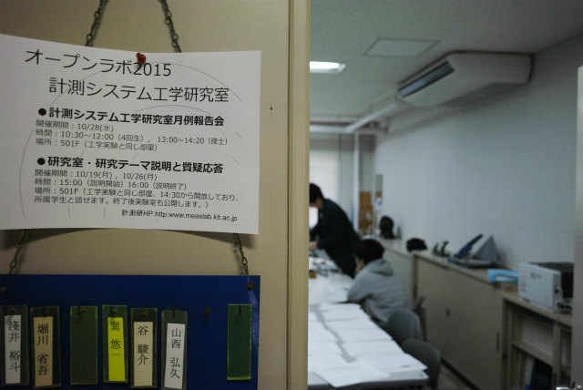
いつもの月例を公開することにしました |
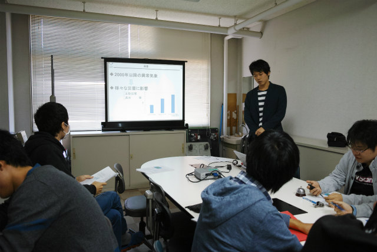
完全なる新テーマ立ち上げ中のB4のKNくんから | ||
|
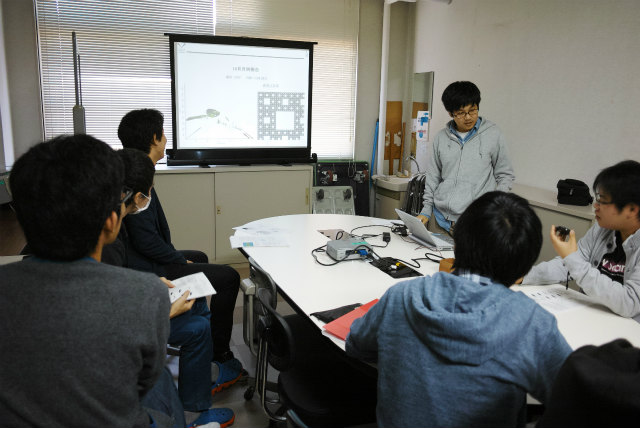
可視化発表済みのH谷川くん |
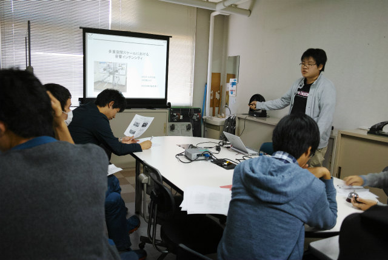
ムー君，Shogoの遺産を受けつつ新テーマ立ち上げ中のF井くん | ||
|
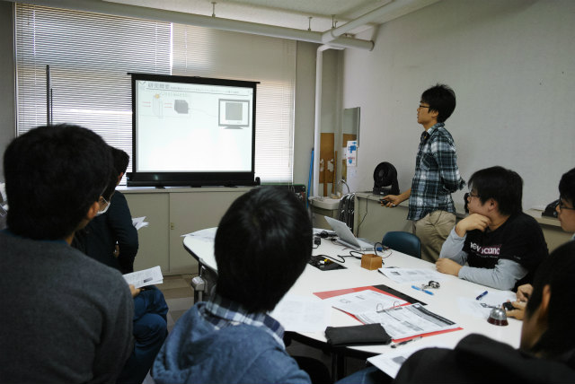
ATEMと可視化発表済みY岡くん |
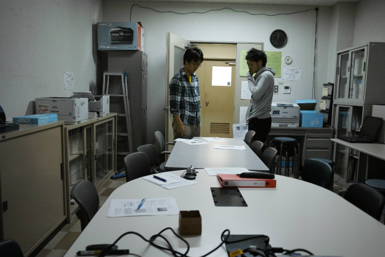
午前の部あとの議論 | ||
|
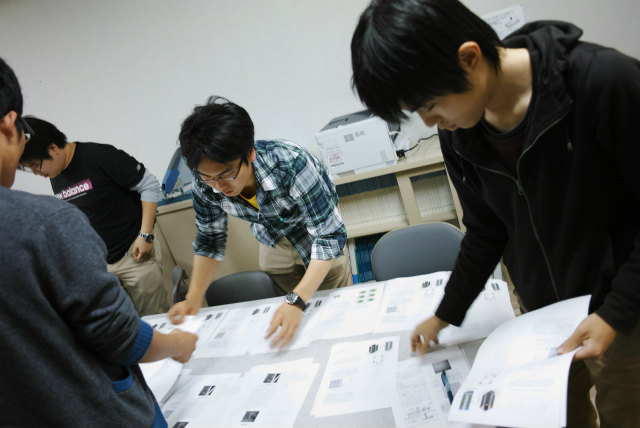
午後の部準備 |
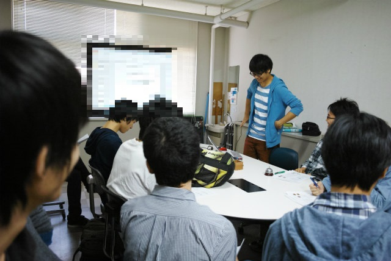
M1のTMくんのは共同研究なのでモザイク | ||
|
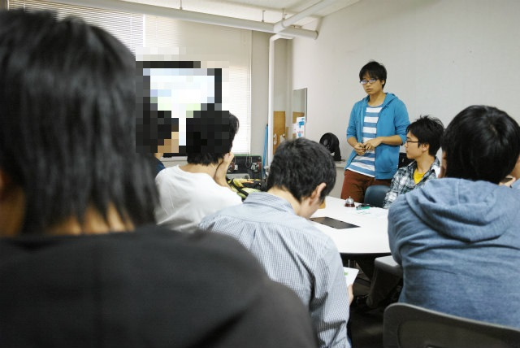
モザイク |
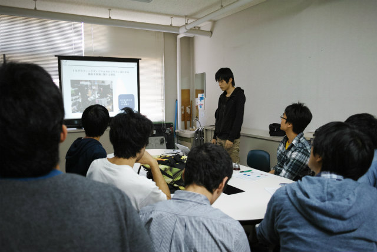
AJKと可視化発表済みのTNくん（来週1件発表） | ||
|
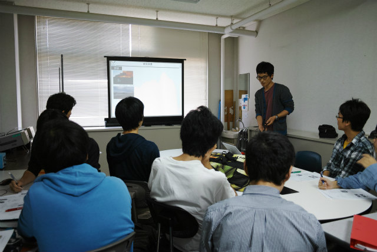
可視化発表済みのY西くん（来週ISEMとFED発表） |
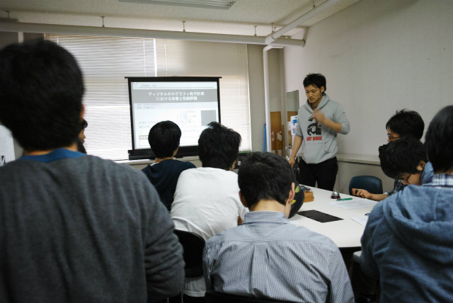
OSA発表済みのM2A井くん（今週1件発表） | ||
|
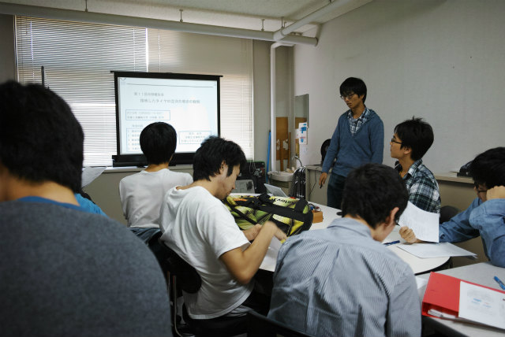
可視化発表済みのShogo（来週1件発表） |
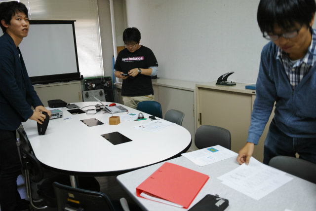
撤収 | ||